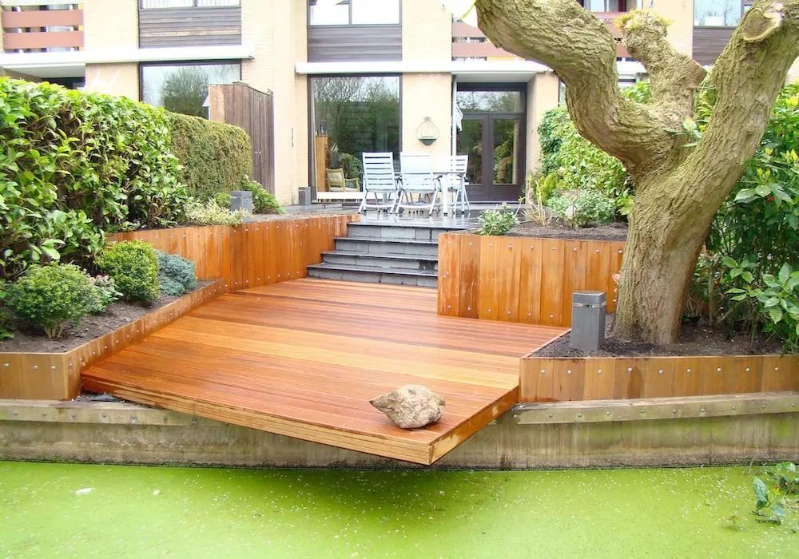
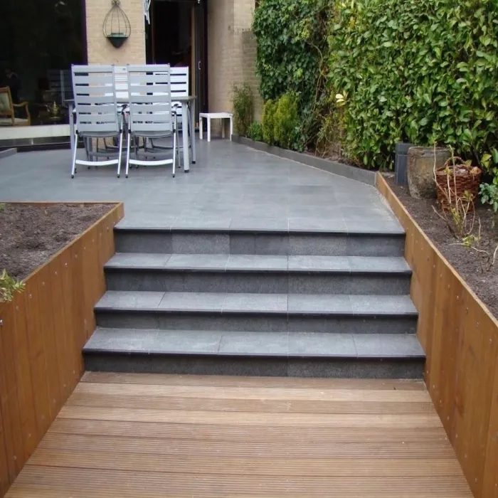
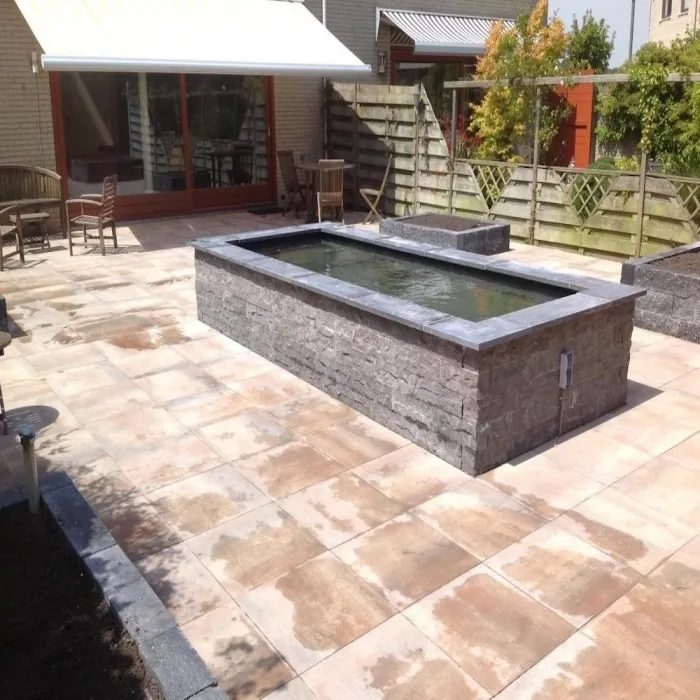
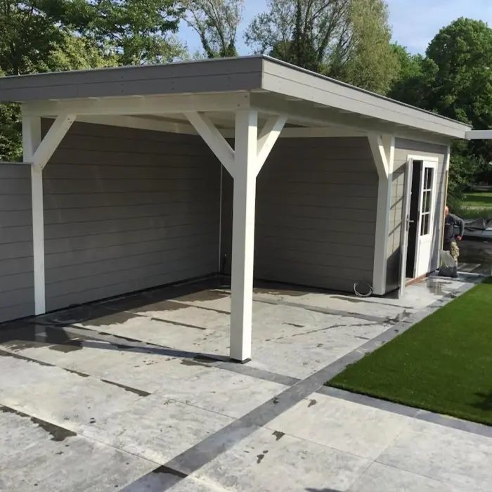
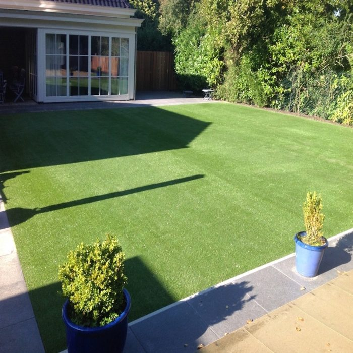
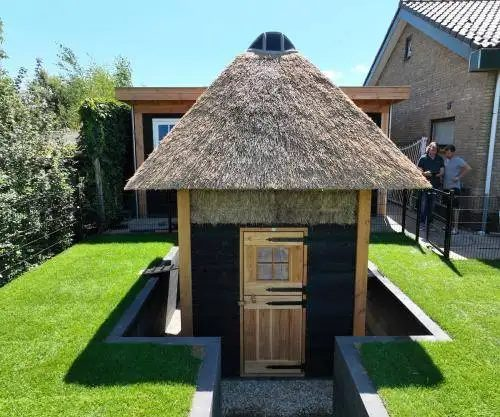
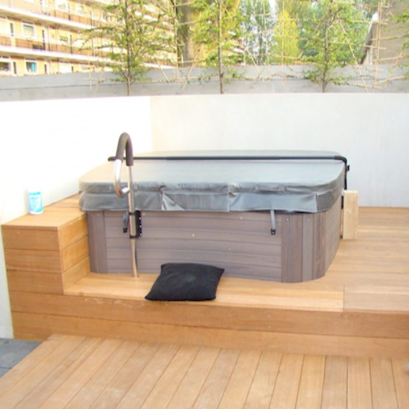
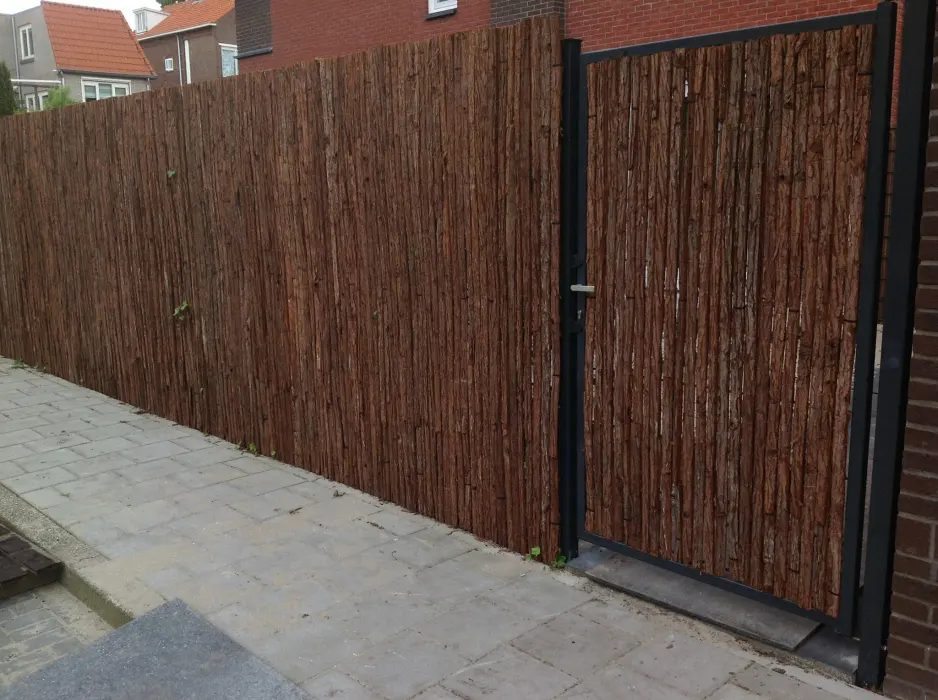
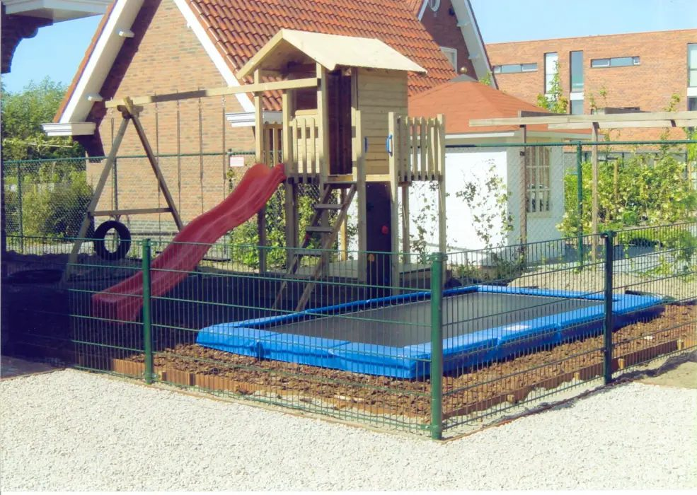
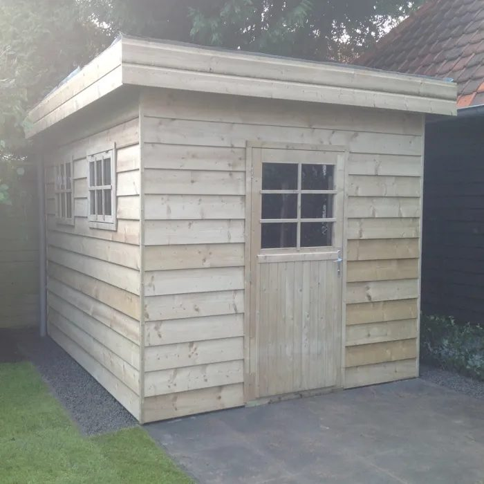

hoveniersadres
Uw tuin ontworpen, aangelegd en afgewerkt door één hovenier.
C. Witteman ontwerpt en legt tuinen aan voor particulieren, bedrijven en overheidsinstellingen. Met oog voor detail en gevoel voor mogelijkheden.

Van tuinaanleg tot sierbestrating
Van het ontwerp tot de aanleg van terras, vijver, overkapping en tuinhuis.

Sierbestrating, terrassen en trappen
Terrassen, paden en trappen, aangelegd met sierbestrating, natuursteen en hardhout.
- Sierbestrating
- Trappen
- Beschoeiing en vlonders

Vijvers, jacuzzi's en kunstgras
Een vijver, een jacuzzi op een vlonder of een gazon van kunstgras.
- Vijvers
- Jacuzzi's
- Kunstgras

Overkappingen, tuinhuizen en schuttingen
Een overkapping, een tuinhuis of blokhut, een schutting of sierhekwerk. Ook speeltoestellen.
- Overkappingen
- Tuinhuizen, blokhutten en schuren
- Schuttingen en sierhekwerk
- Speeltoestellen
Uit eigen portfolio






Advies, ontwerp en aanleg, bij elkaar.
Witteman adviseert, ontwerpt en legt uw droomtuin aan. Met opbouwende ideeën en gevoel voor mogelijkheden brengt hij tuinprojecten telkens tot een goed einde.
Zo kunt u jarenlang van uw tuin genieten, geheel passend bij uw wensen.